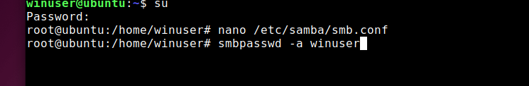

Una vez instalado Samba y haber hecho su configuración, añadimos el usuario winuser en samba
Accedemos a la carpeta compartida y Creamos un archivo
(cd compartida) (touch archivo-linux)
Reiniciamos el servicio de samba (systemctl restart smbd.service)

Accedemos a las direcciones IP de ambas máquinas
Hacemos ping en ambas máquinas (ping + ip de la otra máquina)
En windows, accedemos a la carpeta compartida usando (\\ip de linux\) en ejecutar